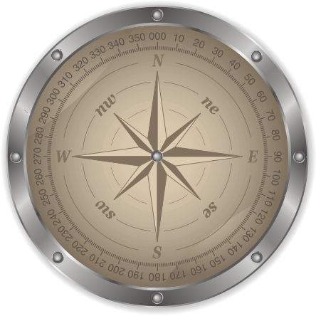

<div class="navbar">
    <div class="navbar-inner">
        <div class="left"><a href="#" class="back link"> <i class="icon icon-back"></i><span>Назад</span></a></div>
        <div class="center sliding">Компас</div>
        <div class="right">
            <!-- Right link contains only icon - additional "icon-only" class--><a href="#" class="link icon-only open-panel"> <i class="icon icon-bars"></i></a>
        </div>
    </div>
</div>
<div class="pages">
    <!-- Page, data-page contains page name-->
    <div data-page="compass" class="page" >
        <!-- Scrollable page content-->
        <div class="page-content center">
            <br />
            <center><p id="headingInfo"><b>Направление:</b></p></center>
        </div>
    </div>
</div>

